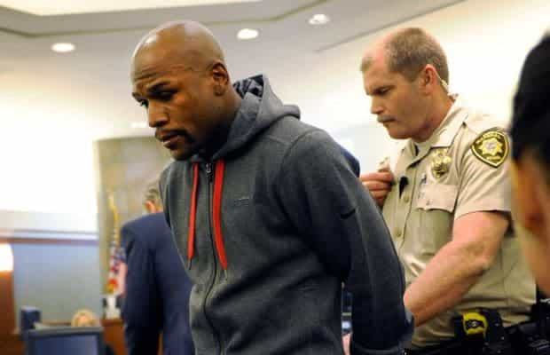
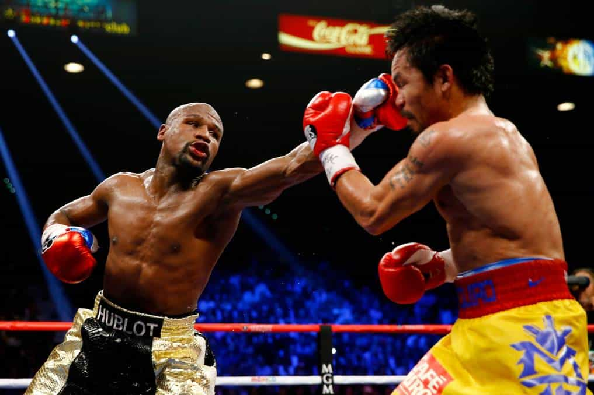

< < < Back
Why Floyd Mayweather’s Victory Over Manny Pacquiao Is A Victory For The Manosphere – Return Of Kings
Most people in the civilized world were aware of this past weekend’s super fight between Floyd Mayweather Jr. and Manny Pacquiao. Much to the dismay of the crowd at the MGM Grand in Las Vegas, Mayweather picked apart the inferior Pacquiao and cruised to an easy victory to push his perfect record to 48-0 (26 KO).
The crowd was overwhelmingly in favor of the underdog Pacquiao and vocalized as much, cheering wildly whenever he made any sort of contact with the elusive Mayweather while booing the pound for pound champ for “showboating.”

This fight was billed as “Good vs. Evil”
The pro-Pacquiao crowd reflected exactly how the public at large feels about Mayweather. They feel like he’s a “monster” and a “bad guy.” Pacquiao’s trainer, Freddie Roach (one of the best in the business) called the bout “a battle between good and evil.”
The bottom line is that most of the public, domestic and abroad, loathes Floyd Mayweather, Jr. and here are the reasons why.
He flaunts his wealth

Floyd “Money” Mayweather
Whoever said money is the root of all evil never had any.
-Jim Young, The Boiler Room
Most people don’t like cocky men. Most people don’t like rich men. Floyd Mayweather is both. His wealth is well documented because he consistently shows the world the fruits of his half billion dollar net worth.
Take a look at your Facebook and Twitter feeds and I guarantee you’ll see person after person vilifying him for bragging about his two Bugatti’s, two Lamborghinis, and two of whatever other six-figure automobile he’s got parked in his 50 car garage.

He’s got a similar fleet of all black cars in Miami
This hate is nothing more than envy. It’s one thing when women chastise a male for boasting about his ridiculous riches (which goes against their “flaunt it if you got it” creedo when referring to their own bodies) but it’s quite another to see and hear men talk about how “wrong” it is to show the world how wealthy one is.
Personally, I doubt I would be quite that flamboyant, but I can’t speak to that because I’m not Mayweather. I didn’t come up like him, I’m not the same person as he is, and I haven’t worked my ass off for thousands of hours in a sweaty gym to reach the pinnacle of my profession.
Any man who claims they wouldn’t be “like that” is akin to the beta schlub who tells his oneitis “He’s such a cocky asshole with his expensive car and clothes. I would never do that even if I could!”
Say what you will about Mayweather, but disliking him for the egregious crime of not being shy about the money he has is a pussified cop out. Just say you hate the guy because he has more money than you do and leave it at that. At least then you’re being honest with yourself and others around you and will properly motivate you to get your own financial house in order.
The new scarlet letter in the world of sports

Mayweather booked for domestic violence
The issue of domestic violence is more prevalent on sports landscape than it has ever been in history. If an athlete so much as gets publicly accused of putting his hands on a woman, he is immediately subjected to a media inflected flogging with his name, reputation, and character dragged through the mud.
If he’s arrested or (gasp) convicted (in the court of public opinion or a court of law) of such crimes his career is subsequently put on hold until the powers that be have decided he’s had his nose in the corner long enough to satisfy the public blood lust to strip him of his financial agency.
ESPN’s Sarah Spain dropped next-level hamster rationale on The Dan LeBatard Show last week about how Mayweather shouldn’t be allowed to fight anymore:
He can do whatever he wants to make money. I just don’t think he should be fighting anymore.
The narrative amongst women, white knights, and the blue pill media is that they would be boycotting the fight to avoid putting money directly into his pocket because of his five domestic abuse convictions. It’s a free country. People can do what they want for whatever reason they want and that’s their choice. But this gesture is typical grandstanding.
When Mike Tyson got out of prison for rape back in 1995, everyone rushed to their television sets to watch his first post-incarceration fight against Peter McNeeley and every subsequent fight after that. Where were the protests then?
Tyson made quick work of McNeeley, and everybody watched despite his rape conviction
Professional fighters have been beating their female significant others for decades. That doesn’t make it right, but the fact of the matter is that Mayweather’s brushes with the law are nothing new. After he was released from prison in 2012, he hasn’t caught so much as an accusation of domestic violence.
But that didn’t stop ESPN and other media outlets from asking questions about his past transgressions. This tact was another thinly veiled ruse to try to undermine a man at the top of his profession.

Mayweather being taken into custody
I’ve stated before that these domestic violence freedom fighters don’t give a shit about the victims, and they verified as much last week. All they were concerned about was why the Nevada State Athletic commission didn’t suspend Mayweather for his convictions and why he’s still allowed to fight and make a shitload of cash, rather than asking questions regarding the mental well being of his victims.
Sure, they reached out to these battered women for interviews and comments about the incidents, but their interest had nothing to do with the victims themselves. All they wanted was more dirt on what went down to further smear Mayweather’s name and continue to paint him in a negative light, knowing full well all the details were in the police reports.

Two of his accusers
It’s plainly obvious that all the media is really concerned about is making him uncomfortable on camera which is something that hasn’t happened to date. They want to break his frame and it’s as simple as that. Try as they might, Floyd’s red pill conditioning ensures that’s not happening any time soon.
All their efforts to lessen the hype fell flat, as the fight broke numerous records as expected. All told, Mayweather and his camp stand to make over $200 million, and Pacquiao will make somewhere in the neighborhood of $120 million.
So much for their little boycott.
He is selfish and unapologetic

He doesn’t apologize for being rich
Selfishness is one of the main tenets we teach here in the ‘sphere for many reasons. The world doesn’t give a shit about us. If we fall on hard times, it’s up to us and us alone to dig ourselves out. We don’t have the government to bail us out or white knights or orbiters to lend us a helping hand when our lives spiral out of control.
If a man doesn’t take care of his needs and wants first, he makes himself extremely vulnerable to the world which will plunder him for his money, status, and sometimes even his health. For this reason it is imperative that we take care of ourselves first before anyone else.
Mayweather makes no bones about his selfishness. In a Showtime piece about his rise to glory in the boxing ranks, Floyd looks directly into the camera and says:
It’s me first, then everybody else. Ain’t no motha fucka gon’ look out for me but me. Me first…..then everybody else.
Heaven forbid a man in this country looks out for himself first rather than using his riches to rescue poor, helpless, virtuous women from the perils of first-world squalor.
Something else that seems to rub the masses the wrong way is that he is flat out unapologetic. He hasn’t apologized about his domestic abuse convictions, the flaunting of his wealth, or anything else the public has crucified him for. Mayweather just doesn’t give a shit about what people think. He gets validation from himself, and himself alone and people hate him for it.

He’s cocky for a reason
The “hate” they have for him is obvious projection. People can only wish they had the balls to be as self-centered and remorseless as he is. They would love nothing more than to give zero fucks about what people say or think about them, but their fear holds them back. And they show that fear by attempting to defame someone who fully exudes personality traits they can only imagine having themselves.
Takeaway
Say what you want about Mayweather, but he is the very best at what he does and showed us why on Saturday night.

Pretty much how it went the entire fight
His victory over Pacquiao pisses people off because he represents everything we teach in the manosphere. The media and the public at large would love for him to be a validation-seeking mangina. But like most men here, Mayweather knows a shit test when he sees one and uses a combination of “agree and amplify” (by embracing the villain role), and non-acknowledgement by simply ignoring the gotcha questions asked by female and betafied reporters.
Floyd Mayweather is kicking life’s ass and people hate him for it. That million dollar smile he flashes at those hostile crowds in Vegas after he dominates yet another opponent shows us that he wouldn’t have it any other way.
Read Next: The Shameless Exploitation Of Domestic Violence In The NFL